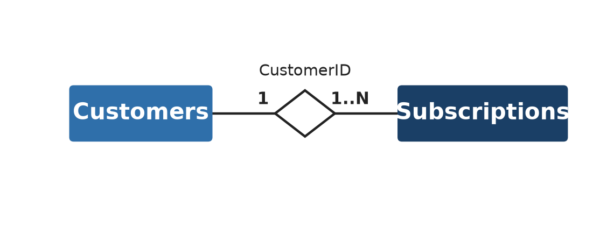

With the Python and pandas fundamentals from the previous chapter in hand, we can start on the first real phase of CRISP-DM: data understanding. Before you clean anything, visualize anything, or build a single model, you need to know what you’re actually working with: which tables exist, how they relate to each other, what each variable means, where the data came from, and what you’re legally allowed to do with it. Skipping this step is a classic rookie mistake: it’s tempting to jump straight to modeling, but a model built on data you don’t understand is a model you can’t trust. And if the data can’t be trusted, the model itself can’t be trusted either: garbage in, garbage out.
Throughout this chapter, we’ll use a single running case to keep things concrete. A newspaper publishing company (NPC) has approached us to help address rising customer churn rates, a trend accelerated by the rise of online news, tablets, and news aggregator apps. The NPC has handed over two tables: one describing its customers, and one describing their newspaper subscriptions. Getting to know these two tables is what this chapter is about.
3.1 The three levels of data understanding
It helps to think about data understanding as operating at three levels, from the coarsest to the finest:
Table level: how many tables do you have, and how do they relate to each other?
Data level: what type is each variable, and is the sample you’re working with representative of the population you actually care about?
Variable level: what does each individual variable look like, and are there quality issues (missing values, outliers, inconsistencies) you’ll need to deal with?
We’ll work through each level in turn, grounding every concept in NPC’s customers and subscriptions tables. However, the variable level will be covered in the next chapter, data exploration.
3.2 Table level: how your tables relate
3.2.1 Entity-relationship diagrams
An entity-relationship diagram (ERD) is an overview of your tables and how they connect. For data understanding purposes, a simplified ERD is enough: you only need the entities (tables) and the relationships between them, not every attribute (or variable) inside each table. Each relationship is annotated with a cardinality: how many records on one side correspond to how many records on the other. There are three common cardinalities:
One-to-one: each record on one side matches exactly one record on the other (e.g., one person has one national ID number).
One-to-many: one record on one side can match several on the other (e.g., one customer can have several credit lines, but each credit line belongs to exactly one customer).
Many-to-many: records on both sides can match several on the other (e.g., a subscription can include several products, and a product can appear in several subscriptions).
Every relationship is built on a key variable: a column that’s unique per record in one table (the key) and reappears in the other table as a foreign key, pointing back to it.

Figure 3.1: Simplified ERD for the NPC case: one customer has one-to-many subscriptions, linked by CustomerID.
Figure 3.1 shows the two entities in this simplified ERD: Customers and Subscriptions. They’re connected by a single one-to-many relationship: one customer can have several subscriptions, but each subscription belongs to exactly one customer. The key variable is CustomerID: a column that uniquely identifies each customer, and reappears in the subscriptions table as a foreign key pointing back to the customer it belongs to.
3.2.2 Confirming a relationship in code
An ERD describes what you expect the relationships between tables to look like, but it’s worth actually verifying that against the data itself. Real-world data doesn’t always behave the way a diagram says it should. For NPC, we expect a one-to-many relationship between customers and subscriptions: each customer can have several subscriptions over time, but every subscription belongs to exactly one customer. We can check this by joining the two tables on the shared key, CustomerID, and counting how many subscriptions each customer has.
import pandas as pdcustomers = pd.read_csv("../data/raw/customers.txt", sep=";")subscriptions = pd.read_csv("../data/raw/subscriptions.txt", sep=";")# left join keeps every customer, even those with zero matching subscriptionsmerged = pd.merge( customers[["CustomerID"]], subscriptions[["CustomerID", "SubscriptionID"]], on="CustomerID", how="left",)# count how many subscriptions each customer hassubs_per_customer = merged.groupby("CustomerID")["SubscriptionID"].count()subs_per_customer.describe()
count 1389.000000
mean 5.940965
std 6.657273
min 1.000000
25% 3.000000
50% 4.000000
75% 6.000000
max 50.000000
Name: SubscriptionID, dtype: float64
Every one of NPC’s 1,389 customers has at least one subscription (the minimum is 1, not 0) and one customer has as many as 50. That confirms the relationship really is one-to-many in both directions we’d expect: no orphaned subscriptions, and no customers with zero subscriptions to explain. If the minimum had been 0, that would have been worth flagging as either a genuine business fact (some customers really have never subscribed) or a data quality problem (a broken join key). This is precisely the kind of information you want to catch here, before it quietly breaks a model three chapters from now.
3.2.3 Table descriptions
A table description, also called a data dictionary, is a short, plain-language definition of every variable in a table, and it’s often the fastest way to get oriented in an unfamiliar dataset. A minimal one for the subscriptions table could look like this:
Variable
Definition
SubscriptionID
The subscription identifier
CustomerID
The customer identifier
ProductID
The product (newspaper) identifier
StartDate
The date the subscription started
TotalPrice
The total price paid for the subscription
In practice, you’ll often build this table description directly from pandas. .info() gives you a fast overview of every column’s name, non-null count, and dtype in one call. This will often be the natural starting point before writing out the fuller, business-meaning version manually.
Every variable falls into one of a few basic types:
Continuous (numerical): data takes values on an interval, bounded or not (e.g.,income, sales, number of clicks).
Categorical (discrete): data takes a limited set of values, and splits further into:
Nominal: with no meaningful order (e.g., marital status, profession, loan purpose).
Ordinal: with a meaningful order (e.g., a credit rating, a letter grade (A, B, C, D)).
Binary: with exactly two values (e.g., gender, employment status, churn (yes/no)).
Getting this classification right matters more than it might seem: if a categorical variable like marital status gets read in as numeric, pandas (or any other tool) will happily compute its mean, which is a number with no meaning whatsoever.
When you read a file straight off disk, pandas doesn’t know any of this by default.
WarningThe generic object trap
pandas defaults almost everything it can’t immediately identify as numeric to a generic object type, including dates, categories, and IDs. object is flexible, but it’s rarely what you actually want: it silently hides the fact that a column needs converting, and lets a variable that should be category or datetime sit around as loosely-typed text until something downstream breaks down. Key take-away: be explicit about the type of each column right when you load the data (or after), rather than discovering the problem three steps later.
CustomerID string[python]
Gender category
DOB string[python]
District category
ZIP string[python]
StreeID string[python]
dtype: object
A few of these choices are worth explaining. IDs (CustomerID, ZIP) are set to string rather than a numeric type. Even though they’re written as digits, you’ll never compute their mean or sum, and treating them as numbers risks losing leading zeros. Gender and District become category, since they’re nominal variables with a small, fixed set of values; pandas stores categories far more compactly than repeated strings, and several downstream tools (groupby, or popular plotting libraries) treat category columns specially. Dates like DOB are left as string for now and converted explicitly in the next section, once we’ve picked a consistent date format.
3.3.2 Sampling
Almost every analytical model is trained on a sample of the original data: a subset of past customers, rather than every customer a company will ever have. The key requirement for a good sample is that it stays representative of the customers the model will actually be applied to in the future. This creates a real trade-off: more historical data generally means a more robust model, but older data is less representative of today’s customers and their behavior. For example, a churn model trained mostly on data from pre-COVID times might not generalize well to the post-COVID world, where their behavior changed drastically. The key takeaway is that your sample should be representative for the population and the business problem you actually care about, not just the largest sample you can get your hands on (however, the more the better, as long as it’s still representative).
WarningWatch out for sampling bias
It’s easy to introduce bias without meaning to. If you sample only currently active customers to build a churn model, you’ve quietly excluded everyone who already churned and those are exactly the customers you most need examples of. Focusing on only the active customers is also a clear example of survivorship bias as seen in Chapter 1.
When the outcome you care about is rare, a random sample can end up with too few positive cases to learn from reliably. Churn is a classic example of this, since most customers in any given period don’t churn. A more extreme case is fraud detection, where the number of fraudulent transactions is typically much smaller than legitimate ones, which is a good thing from a social perspective but poses a challenge for modeling. Stratified sampling addresses this by sampling separately within predefined groups (strata): if the full population is 99% non-churners and 1% churners, a stratified sample preserves that exact 99/1 split, rather than leaving it to chance.
3.4 Variable level: a first statistical read
3.4.1 Working with dates
NPC’s date columns (when a subscription started, ended, was last paid, or renewed) are read in as plain text, since that’s how they’re stored in the file. Converting them to an actual datetime type is what lets you do date arithmetic (how long has this subscription run?) or extract components (which month did most subscriptions start?) later on. pd.to_datetime() handles the conversion; since NPC’s dates are written day/month/year, we tell it the format explicitly rather than letting it guess.
date_cols = ["StartDate", "EndDate", "PaymentDate", "RenewalDate"]# errors="coerce" turns any value that doesn't match the format into a missing value (NaT),# instead of raising an error and stopping the whole conversionsubscriptions[date_cols] = subscriptions[date_cols].apply(lambda col: pd.to_datetime(col, format="%d/%m/%Y", errors="coerce"))customers["DOB"] = pd.to_datetime(customers["DOB"], format="%d/%m/%Y", errors="coerce")subscriptions[date_cols].dtypes
With types and dates sorted out, the last step at the variable level is to actually look at what each column contains: its typical value, its spread, and how it relates to other variables. pandas gives you this directly, without needing a single chart yet (charts are exactly where the next chapter picks up).
For a categorical variable, .value_counts() shows you every category and how often it occurs:
PaymentStatus
Paid 7831
Not Paid 421
Name: count, dtype: int64
For a numeric variable, .describe() gives you count, mean, standard deviation, and quartiles in one call. Calling it on the column of interest, TotalPrice, immediately shows something worth flagging: only 8,091 of the 8,252 subscriptions have a non-missing price.
subscriptions["TotalPrice"].describe()
count 8091.000000
mean 125.372010
std 95.119942
min 0.000000
25% 29.600000
50% 79.000000
75% 235.000000
max 635.960000
Name: TotalPrice, dtype: float64
Individual statistics are available as their own methods too, which is handy when you only need one number rather than the full summary. For example, the mean, variance, and standard deviation of TotalPrice:
Two variables can also be checked for how strongly they move together, using .corr(). Here, the number of newspapers included in a subscription correlates fairly strongly with what the customer ends up paying, which is reassuring, since the alternative (no relationship at all) would suggest a problem with one of the two columns.
Finally, .describe(include="all") extends the summary to every column at once, numeric and categorical alike, and .select_dtypes() lets you restrict that to just the numeric columns when that’s all you need:
Already, from these plain numeric summaries a few things stand out: TotalPrice has missing values, and its range (from 0 to over 600) is wide enough to be worth a closer look. Whether those are outliers, a data entry issue, or a perfectly normal reflection of very different subscription sizes is exactly the kind of question visualizing the data, in the next chapter, will help answer.
3.4.3 Saving your progress
Once a table has been read in with the right types, it’s worth saving that cleaned-up version rather than re-deriving it from the raw text file every time you reopen the notebook. Parquet is a compressed, columnar file format built for exactly this: it’s faster to read and write than CSV, keeps your dtypes intact (a category column stays a category column), and produces a smaller file on disk.
Not all data looks like NPC’s two neat tables. Broadly, the data an organization works with comes from a handful of sources, each with its own trade-offs:
Source
Description
Transactional data
Structured, detailed records of transactions (purchases, payments, claims), typically stored in a relational database. Easy to aggregate into sums, averages, or trends over time.
Qualitative, expert data
Domain expertise from people with substantial business experience (a credit portfolio manager, a brand manager). Useful for sanity-checking a model’s output against what a human expert would expect.
Publicly available data
External data anyone can access: macroeconomic indicators (GDP, inflation, unemployment), or open repositories like the UCI Machine Learning Repository or Kaggle.
Web data
Data gathered from social media, search engines, or websites, either via an API or by web scraping.
Web data deserves a closer look, since the two ways of collecting it, APIs and scraping, differ a lot in practice. An API (application programming interface) is a channel a platform deliberately provides for programmatic access to its data; it’s usually the quicker, cleaner route, and most programming languages ship packages for talking to the APIs of major platforms. But most platforms require you to apply for access first, and the landscape has gotten stingier in recent years. For example, Meta/Facebook has severely restricted its API, and X/Twitter turned its into a paid service, even Reddit has recently tightened its API access. A few platforms still offer a free API worth knowing about, including decentralized X-alternatives like Mastodon and Bluesky. Be aware though that each platform serves its own specific audience, so data pulled from any single platform carries that audience’s biases, and its veracity is worth treating with some skepticism.
Another option is web scraping, which involves programmatically loading a page and extracting data from its HTML, without going through an API. This method is more powerful and flexible, since it works on virtually any site. Modern scraping tools actually drive a real browser rather than just parsing raw HTML: they render the page’s JavaScript, letting them log in, scroll, and click the way a human user would. That power comes with more legal exposure, and scraping sits in more of a legal gray zone. However, several platforms (X and Facebook among them) actively restrict automated access, and you should always check a site’s terms of service before scraping it.
3.6 Data regulation: privacy and intellectual property rights
Being able to access or collect data doesn’t automatically mean you’re allowed to use it however you like. Two kinds of rights determine what’s actually permitted:
Privacy rights govern personal and sensitive information and how it’s collected, monitored, and shared. In the EU, this is regulated by the GDPR.
Intellectual property rights protect commercially valuable creations like patents, copyrights, and trade secrets. For data specifically, IP rights typically don’t cover the raw data itself, but rather its particular representation: a structured database, or the specific content of a website.
3.6.1 GDPR
The General Data Protection Regulation(European Parliament and Council of the European Union 2016) is the EU’s regulatory framework for individual privacy rights, and it applies more broadly than most people expect: to any information that can directly or indirectly identify someone. That includes not just names, but phone numbers, email addresses, IP addresses, device IDs, and cookies.
Note“Anonymous” data can still identify someone
Even data that looks harmless on its own can carry real re-identification risk. An address alone might seem anonymous, but “Chapel Street 88, Brussels” identifies a specific person the moment there’s only one occupant at that address. Stripping out obvious identifiers like names isn’t the same as making data anonymous, and you have to think about what a combination of seemingly harmless fields can reveal.
GDPR is built around seven key principles. Rather than list them in the abstract, it’s more useful to see what actually happens when a company violates each one. By now GDPR enforcement has produced a long list of real fines that make the abstract principles concrete.
Lawfulness, fairness, and transparency: process data legally, without unfair discrimination, and be transparent about how it’s used. Spain’s La Liga football association was fined €250,000 after its official app used fans’ phones to record ambient audio and check location, to detect bars illegally streaming matches. Fans were never clearly told their microphone would be used this way, which is a clear violation of transparency.1
Purpose limitation: don’t use data for anything beyond the purpose it was originally collected for. In the first-ever fine issued under Belgium’s data protection authority, a mayor was fined €2,000 for emailing election campaign material to civilians whose addresses he’d only obtained via a copied-in complaint email. Of course, it was never intended that the complaints would be used for this purpose.2
Data minimization: only collect what you actually need for the stated purpose, and be especially careful with sensitive attributes (ethnicity, religion, sexual or political preference). A Greek leasing company was fined €10,000 after a property-sale ad it posted included a photo showing a customer’s car with its license plate clearly visible. This allowed his own social circle to identify him as someone whose family property was being sold off, far more personal data than the ad needed to include.3
Accuracy: keep data correct and up to date. For example, a loan decision based on stale income data, or repeated contact attempts using an address you know is wrong, can itself be a violation. The starkest real-world example: the Dutch tax authority was fined €750,000 specifically for accuracy violations in an internal fraud-risk blacklist that kept incorrect and outdated fraud indicators on file. In some cases, someone stayed flagged as a suspected fraudster even after an investigation had cleared them, because that clearance was never recorded. Tens of thousands of families were wrongly accused of childcare benefits fraud as a result, in a scandal that eventually brought down the Dutch government.4
Storage limitation: don’t keep identifiable data longer than the purpose actually requires. Athens’s public transport operator was fined €50,000 for retaining ticketing data including passport numbers for years with no justified retention period,5 and French retailer Brico Privé was fined €500,000 for, among other issues, keeping inactive customers’ data for over five years.6
Integrity and confidentiality: keep data secure, and restrict access to only the people who genuinely need it. An Amsterdam hospital, OLVG, was fined €440,000 after an investigation found no effective checks on which staff were accessing patient medical records, some without any work-related need to.7
Accountability: organizations must be able to actively demonstrate their compliance, not just claim it. The same Dutch tax authority case is instructive here too: investigators found the agency hadn’t properly involved its own data protection officer before rolling out the fraud blacklist. This is exactly the kind of documented internal oversight the accountability principle exists to guarantee.8
Two mechanisms are commonly used to reduce privacy risk while still keeping data useful: anonymized data has been processed so it can no longer be traced back to an individual at all (hard to achieve in practice without destroying most of its analytical value), while pseudonymized data replaces direct identifiers with a code. For example, customer names and emails replaced for an ID like CUST_001, with the mapping back to real identities kept separately and securely. Pseudonymization is far more common in practice, since it keeps data usable for analysis while still meaningfully reducing exposure if it leaks.
One trap worth calling out explicitly: GDPR still applies to social media and web data, even though it’s publicly visible. A username on a public platform is a weaker anonymizer than it looks. For example, a handle like @POTUS unambiguously identifies a specific individual. Moreover, scraping or analyzing public posts still needs a legal basis, such as consent or a demonstrable public interest, even when informing every individual user isn’t practically feasible.
3.7 Where we go from here
At this point, we know what tables we have, how they relate, what type each variable is, where the data came from, and what we’re legally allowed to do with it. A first look at the plain numbers has already flagged a couple of things worth investigating further (TotalPrice’s missing values and wide range chief among them). The next chapter is where we put those numbers into pictures: visualizing distributions, spotting outliers, and digging into the data quality issues this chapter has only hinted at.
European Parliament and Council of the European Union. 2016. Regulation (EU) 2016/679 of the European Parliament and of the Council of 27 April 2016 on the Protection of Natural Persons with Regard to the Processing of Personal Data and on the Free Movement of Such Data, and Repealing Directive 95/46/EC (General Data Protection Regulation) (Text with EEA Relevance). No. 119.